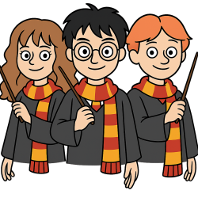
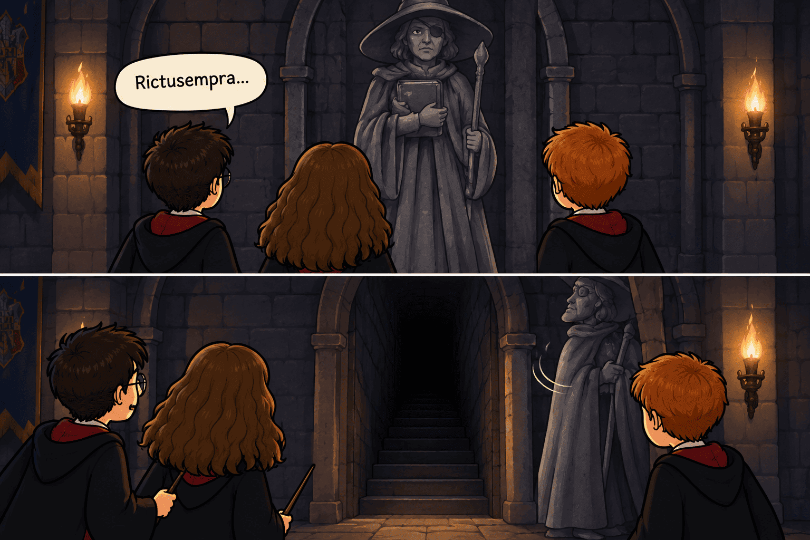
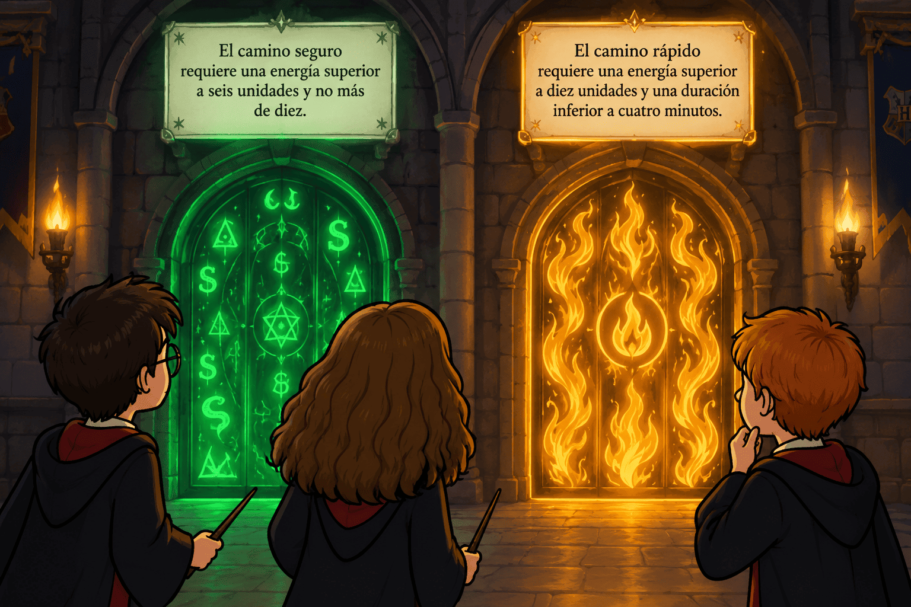
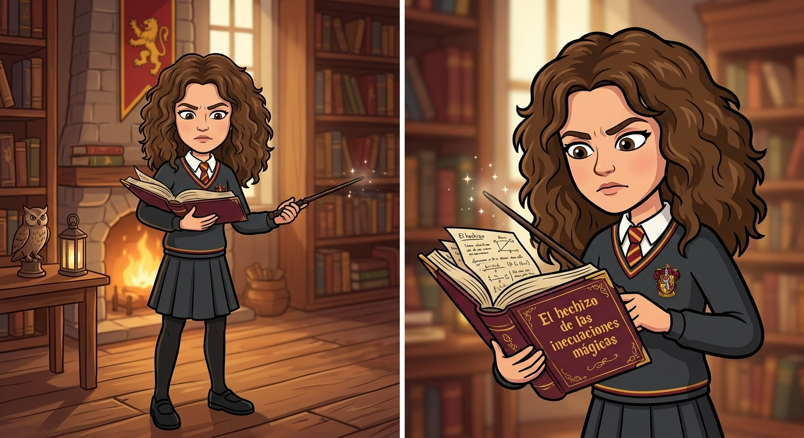
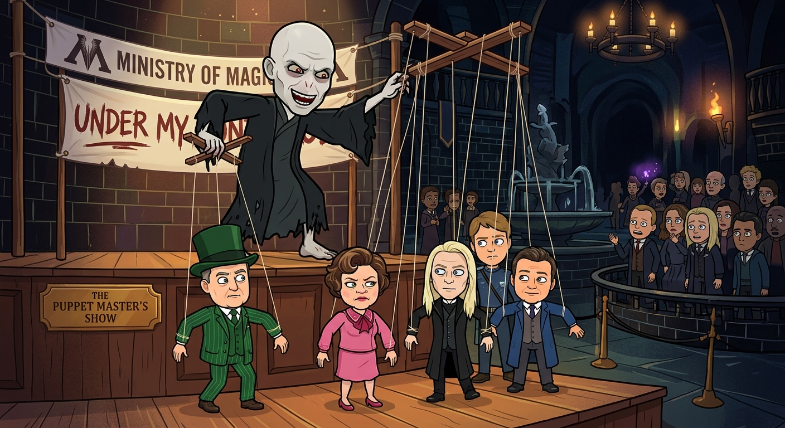

Harry Potter y el misterio de las inecuaciones mágicas
Capítulo 1. Una carta que no debía existir
Era una fría mañana de noviembre en el castillo de Hogwarts. La lluvia golpeaba los ventanales del Gran Comedor y el viento hacía temblar las antorchas de los pasillos. Harry Potter desayunaba unas tostadas mientras Hermione Granger leía un libro tan grueso que parecía capaz de detener una flecha. Ron Weasley, por su parte, intentaba convencer a una salchicha de que saltara desde su plato hasta su boca sin utilizar las manos.
—Ron, eso no es magia —dijo Hermione sin levantar la vista—. Es una forma bastante desagradable de desayunar.
—Es una forma bastante avanzada de desayunar —respondió Ron—. Tú no lo entiendes porque siempre estás estudiando.
Harry se rio. Hacía tiempo que no disfrutaban de una mañana tranquila. Desde el comienzo del curso, Hogwarts había estado lleno de pequeños incidentes: escaleras que cambiaban de dirección más de lo habitual, retratos que intercambiaban sus marcos durante la noche y armaduras que aparecían en lugares distintos cada mañana.
De repente, una lechuza blanca entró por una ventana entreabierta. Llevaba una carta negra sujeta a una pata con una cinta plateada. En el sobre aparecía un símbolo desconocido: un círculo atravesado por dos líneas y rodeado de números.
La lechuza dejó la carta delante de Harry y salió volando.
—¿Otra carta para ti? —preguntó Ron—. Espero que no sea una invitación para salvar el mundo antes de comer. Hoy hay pastel de calabaza.
Harry abrió el sobre. Dentro encontró una hoja con letras plateadas que brillaban débilmente.
Harry Potter, Hermione Granger y Ronald Weasley:
Esta noche, a las ocho, la Cámara de los Arcanos Matemáticos quedará desconectada de la protección del castillo. Si no conseguís restablecer sus barreras antes de la medianoche, una fuerza desconocida podrá entrar en Hogwarts.
Para llegar a la Cámara deberéis superar tres pruebas. No bastará con utilizar hechizos poderosos. Tendréis que razonar, interpretar las condiciones y encontrar todas las soluciones posibles.
Recordad: en la magia antigua, no siempre existe una única respuesta.
El Guardián de los Arcanos.
Hermione dejó el libro sobre la mesa.
—La Cámara de los Arcanos Matemáticos aparece en algunos textos antiguos. Se supone que contiene mecanismos mágicos que funcionan mediante relaciones numéricas. Nadie sabe dónde está exactamente.
—Pues quien haya escrito esto sabe nuestros nombres —dijo Ron—. Y también sabe que yo prefiero el pastel de calabaza. Eso es preocupante.
Harry volvió a mirar la carta. En la parte inferior había aparecido una nueva frase:
«La primera puerta solo se abrirá cuando el número de energía mágica sea mayor que doce y menor o igual que veinte».
Debajo aparecía una pequeña casilla para introducir un número.
—Eso es una inecuación —dijo Hermione—. No tenemos que adivinar un único número. Tenemos que encontrar todos los valores que cumplen las condiciones.
Sacó un pergamino y escribió:
\( 12<x\leq20 \)
—La energía debe ser mayor que doce, así que doce no sirve. Pero puede ser veinte, porque la condición dice que debe ser menor o igual que veinte.
—Entonces podemos probar con trece, catorce, quince… —empezó Ron.
—Exactamente —respondió Hermione—. Si la energía se mide en unidades enteras, sirven trece, catorce, quince, dieciséis, diecisiete, dieciocho, diecinueve y veinte. Si admitiera valores decimales, también servirían, por ejemplo, doce coma cinco o diecisiete coma ocho.
Harry introdujo el número dieciséis en la casilla.
La carta emitió un destello azul y las letras se reorganizaron. En el reverso apareció un mapa del castillo con una cruz situada detrás de la estatua de una bruja tuerta.
—A las ocho —dijo Harry, guardándose el mapa—. Después de cenar.
—¿Y si esto es una trampa? —preguntó Ron.
Hermione cerró su libro.
—Entonces será mejor que vayamos preparados.
Ninguno de los tres sabía todavía que aquella noche descubrirían algo importante: una inecuación podía ser mucho más que un ejercicio de clase. Podía ser la diferencia entre encontrar una salida y quedarse atrapado en un pasillo encantado.

Capítulo 2. La puerta de los dos guardianes
A las ocho en punto, Harry, Hermione y Ron se reunieron detrás de la estatua de la bruja tuerta. Harry pronunció la contraseña que aparecía en el mapa y la estatua se apartó, dejando al descubierto una escalera estrecha que ascendía hacia la oscuridad.

Caminaron durante varios minutos hasta llegar a una puerta de piedra. En ella había dos guardianes tallados: uno sostenía una antorcha y el otro, una balanza.
Cuando los tres se acercaron, los ojos de las estatuas se iluminaron.
—Para atravesar esta puerta —dijo el guardián de la antorcha—, deberéis llevar una cantidad de polvo de estrella que sea suficiente para activar el mecanismo.
El segundo guardián continuó:
—Pero no podéis llevar demasiado. Si la cantidad es excesiva, el mecanismo se bloqueará.
En la pared aparecieron dos inscripciones:
La cantidad de polvo debe ser mayor que cinco.
La cantidad de polvo no puede superar las doce unidades.
Ron frunció el ceño.
—Otra vez números. ¿Por qué no pueden poner una contraseña normal? Algo como «patata» o «quidditch».
Hermione sacó su varita y escribió en el aire:
\( x>5 \)
\( x\leq12 \)
—Tenemos dos condiciones —explicó—. La primera nos dice que \(x\) debe ser mayor que cinco. La segunda, que debe ser menor o igual que doce. Para abrir la puerta, tienen que cumplirse ambas a la vez.
—¿Y eso cómo se escribe? —preguntó Harry.
Hermione unió las dos expresiones:
\( \boxed{5<x\leq12} \)
—Es un sistema de inecuaciones —dijo—. La solución son los valores que cumplen todas las condiciones al mismo tiempo.
Ron miró la inscripción.
—Si llevamos cinco unidades, no sirve. Si llevamos doce, sí. ¿Y seis?
—También —respondió Hermione.
—¿Y diez?
—También.
—¿Y doce y media?
Hermione negó con la cabeza.
—No, porque superaríamos las doce unidades.
Harry observó que, junto a la puerta, había siete pequeñas ranuras numeradas del seis al doce.
—Creo que el mecanismo solo acepta cantidades enteras —dijo.
Introdujeron seis unidades de polvo de estrella en una de las ranuras. La puerta vibró, pero no se abrió.
—Quizá no sea suficiente —dijo Ron.
Probaron con ocho unidades. La puerta emitió un sonido profundo y una línea dorada recorrió sus bordes. Sin embargo, siguió cerrada.
Hermione se acercó a la inscripción de la balanza. En una esquina casi invisible había otra frase:
La cantidad debe ser par.
—¡Ya lo veo! —exclamó—. No basta con cumplir las dos primeras condiciones. Además, la cantidad tiene que ser un número par.
Escribió:
\( 5<x\leq12 \)
y debajo anotó los números pares que estaban dentro de ese intervalo:
\( 6,\ 8,\ 10,\ 12 \)
—Hemos probado con seis y ocho. Probemos con diez.
Harry introdujo diez unidades de polvo de estrella. La puerta tembló y se abrió lentamente.
—Diez —dijo Ron—. La cantidad perfecta. Ni demasiado ni demasiado poco.
—No exactamente —contestó Hermione—. Diez es una solución válida, pero no es la única. También habrían funcionado seis, ocho o doce, según las condiciones que hemos encontrado.
—Pues me alegro de que no hayamos tenido que probarlas todas —dijo Ron.
Al otro lado había un corredor iluminado por pequeñas esferas flotantes. En el suelo se distinguían unas marcas que parecían indicar un camino, pero varias desaparecían cada pocos segundos.
En una pared encontraron otra inscripción:
«Solo permanecerá visible el camino cuya energía sea superior a cuatro y cuya duración no supere los nueve minutos».
Harry miró a Hermione.
—Supongo que esto también se resuelve con un sistema.
—Sí. Si llamamos \(x\) a la energía del camino y \(t\) a su duración, tendremos que comprobar las dos condiciones correspondientes. No debemos confundir las variables: la energía y el tiempo son magnitudes distintas.
El corredor se iluminó de repente y mostró tres caminos: uno con energía tres, otro con energía seis y otro con energía ocho. Sus duraciones eran, respectivamente, siete, diez y nueve minutos.
Hermione señaló el tercero.
—El camino con energía ocho y duración nueve cumple las dos condiciones: ocho es mayor que cuatro y nueve no supera nueve.
Harry y Ron la siguieron. Cuando pisaron el último tramo, el resto de los caminos desapareció.
—Una cosa está clara —dijo Ron—: aquí las matemáticas no son una asignatura. Son una cuestión de supervivencia.
Capítulo 3. El pasillo de las cantidades imposibles
El camino desembocó en una sala circular con cuatro puertas. Cada una tenía un número grabado: uno, dos, tres y cuatro. En el centro había una fuente seca rodeada de frascos de cristal.
Una voz salió de las paredes:
—Para continuar, deberéis preparar una poción de luz. Cada frasco contiene tres gotas de esencia luminosa y necesitáis añadir dos gotas de agua mágica. El total no puede superar las veinte gotas.
Ron se acercó a los frascos.
—Esto parece sencillo. Cogemos unos cuantos y listo.
—No tan rápido —dijo Hermione—. Primero tenemos que traducir el problema a una expresión matemática.
Si \(x\) representa el número de frascos, cada uno aporta tres gotas de esencia. Por tanto, la cantidad de esencia es \(3x\). A eso se añaden las dos gotas de agua mágica.
La cantidad total debe ser menor o igual que veinte:
\( 3x+2\leq20 \)
Hermione resolvió la inecuación paso a paso:
\( 3x+2\leq20 \)
Restó dos en ambos miembros:
\( 3x\leq18 \)
Dividió entre tres:
\( \boxed{x\leq6} \)
—Podemos utilizar como máximo seis frascos —explicó—. Como no podemos usar una cantidad negativa de frascos y cada frasco es una unidad completa, las cantidades posibles son cero, uno, dos, tres, cuatro, cinco o seis. Si queremos preparar la mayor cantidad de poción sin superar el límite, debemos usar seis.
—¿Y si utilizamos siete? —preguntó Ron.
—Tendríamos \(3\cdot7+2=23\) gotas. Superaríamos el máximo en tres gotas.
Harry contó seis frascos, los colocó alrededor de la fuente y pronunció el encantamiento indicado en el borde. Una luz blanca llenó la sala.
Las cuatro puertas se iluminaron, pero solo la número tres permaneció abierta.
Al entrar, encontraron una mesa con una caja metálica. Sobre ella había una nota:
La caja contiene un número entero positivo. Si le restas tres y multiplicas el resultado por sí mismo, obtienes un valor mayor que nueve. ¿Qué números podrían abrir la caja?
Ron leyó la nota dos veces.
—¿Tenemos que resolver una ecuación?
—No —dijo Hermione—. Fíjate en que pone «mayor que nueve», no «igual a nueve». Tenemos una inecuación de segundo grado.
Llamaron \(x\) al número de la caja. La condición era:
\( (x-3)^2>9 \)
Para resolverla, Hermione pensó en qué números tienen un cuadrado mayor que nueve. Un número mayor que tres tiene un cuadrado superior a nueve; un número menor que menos tres también. Por eso:
\( x-3<-3 \quad \text{o} \quad x-3>3 \)
Resolvieron cada parte por separado.
En la primera:
\( x-3<-3 \)
Sumaron tres:
\( x<0 \)
En la segunda:
\( x-3>3 \)
Sumaron tres:
\( x>6 \)
Por tanto, la solución era:
\( \boxed{x<0\ \text{o}\ x>6} \)
—Pero la nota dice que el número es entero positivo —recordó Harry.
—¡Eso reduce las posibilidades! —respondió Hermione—. Como \(x\) debe ser positivo, no podemos utilizar los valores menores que cero. Así que sirven los enteros positivos mayores que seis: siete, ocho, nueve, diez y todos los siguientes.
Ron escribió el número siete en la caja.
Se oyó un clic. La tapa se abrió y dentro apareció una llave de plata.
—¿Por qué has elegido siete? —preguntó Harry.
—Porque cumple la condición y es el menor entero positivo que la cumple. Además, no tenemos ninguna razón para elegir un número más grande.
Hermione sonrió.
—Eso también es una buena estrategia matemática: cuando hay muchas soluciones, las condiciones adicionales y el contexto nos ayudan a elegir la más adecuada.
La llave tenía grabada una pequeña serpiente. Al tocarla, las cuatro puertas se cerraron de golpe y el suelo comenzó a temblar.
Una voz distinta, más grave, resonó por la sala:
—Habéis superado las pruebas de cantidad. Ahora deberéis demostrar que sabéis interpretar el signo de una expresión cuadrática.
En la pared apareció una última inscripción:
\( x^2-5x+6>0 \)
Capítulo 4. La sala de los signos cambiantes
Harry reconoció los números de la inscripción.
—Esto parece una expresión que vimos en clase.
—Es una inecuación de segundo grado —dijo Hermione—. Para resolverla, primero tenemos que encontrar sus raíces, es decir, los valores que hacen que la expresión sea igual a cero.
Escribió:
\( x^2-5x+6=0 \)
Buscó dos números que multiplicados dieran seis y sumados dieran cinco: dos y tres. Por tanto, podía factorizarse así:
\( (x-2)(x-3)=0 \)
La expresión vale cero cuando alguno de los factores vale cero:
\( x-2=0 \Rightarrow x=2 \)
\( x-3=0 \Rightarrow x=3 \)
—Las raíces son dos y tres —explicó Hermione—. Estos valores dividen la recta real en tres intervalos: los números menores que dos, los comprendidos entre dos y tres y los mayores que tres.
Ron observó la expresión.
—¿Y cómo sabemos dónde es positiva?
Hermione dibujó una recta numérica en el aire. Las raíces dos y tres aparecieron como dos puntos luminosos.
—Podemos estudiar el signo de cada factor en los tres intervalos.
Si \(x<2\), tanto \(x-2\) como \(x-3\) son negativos. El producto de dos números negativos es positivo.
Si \(2<x<3\), el factor \(x-2\) es positivo, pero \(x-3\) es negativo. El producto es negativo.
Si \(x>3\), ambos factores son positivos. Su producto vuelve a ser positivo.
La inecuación pedía que el resultado fuera estrictamente mayor que cero. Por tanto, las soluciones eran:
\( \boxed{x<2\ \text{o}\ x>3} \)
—¿Y dos y tres? —preguntó Harry.
—No se incluyen —contestó Hermione—, porque en esos puntos la expresión vale cero y necesitamos que sea mayor que cero.
La inscripción brilló y la pared se dividió en dos mitades. Detrás apareció una escalera que descendía hacia una sala mucho más grande.
Pero antes de bajar, Ron señaló otra frase que acababa de aparecer:
«El puente solo se materializará cuando la expresión sea mayor o igual que cero».
Debajo se escribió:
\( -x^2+5x-6\geq0 \)
—Esta es parecida —dijo Harry.
—Sí, pero debemos prestar atención al signo negativo del término cuadrático —explicó Hermione—. Podemos multiplicar toda la inecuación por menos uno, pero entonces tenemos que cambiar el sentido de la desigualdad.
Así obtenían:
\( x^2-5x+6\leq0 \)
La expresión se factorizaba de la misma forma:
\( (x-2)(x-3)\leq0 \)
Ya sabían que el producto era negativo entre las raíces y cero en las raíces. Como ahora se permitía el cero, los extremos debían incluirse.
La solución era:
\( \boxed{2\leq x\leq3} \)
—¡Solo necesitamos un valor entre dos y tres, incluidos los extremos! —exclamó Ron.
—Exacto —dijo Hermione—. Por ejemplo, \(x=2,5\). Si lo sustituimos en la expresión original:
\( -(2,5)^2+5\cdot2,5-6 \)
\( -6,25+12,5-6=0,25 \)
El resultado es positivo, así que cumple la condición.
Harry introdujo el valor \(2,5\) en una pequeña ranura situada junto a la escalera. Un puente de piedra apareció sobre un abismo oscuro.
Los tres cruzaron con cuidado. A sus pies se movían sombras que parecían formar números, raíces y signos de desigualdad.
Al otro lado encontraron una puerta de madera con una inscripción:
No basta con saber calcular. También hay que saber qué significa la solución.
Hermione se quedó pensativa.
—Eso es importante. Una solución matemática no es solo un conjunto de números. Tenemos que entender qué representan en el problema y cuáles tienen sentido en la situación real.
Ron asintió.
—Por ejemplo, no tendría mucho sentido decir que necesitamos menos tres frascos de poción.
—Exactamente —dijo Hermione—. Aunque una inecuación tenga una solución matemática, el contexto puede limitar los valores que podemos aceptar.
Capítulo 5. El almacén de los objetos encantados
La puerta se abrió y los tres amigos entraron en un almacén inmenso. Había escobas voladoras, frascos de pociones, pergaminos, jaulas vacías y cajas que se movían solas.
En el centro se encontraba un armario con una cerradura de dos ruedas. Sobre él había un mensaje:
Para abrir el armario, el número de objetos mágicos guardados deberá cumplir las dos condiciones siguientes: el número de objetos multiplicado por dos, más cuatro, será como máximo dieciocho; y el número de objetos, aumentado en uno, será al menos seis.
Ron empezó a contar las escobas.
—¿Cuántos objetos tenemos que guardar?
—Primero debemos resolver el sistema —dijo Hermione—. Llamemos \(x\) al número de objetos.
La primera condición era:
\( 2x+4\leq18 \)
Restaron cuatro:
\( 2x\leq14 \)
Dividieron entre dos:
\( x\leq7 \)
La segunda condición era:
\( x+1\geq6 \)
Restaron uno:
\( x\geq5 \)
Por tanto, el sistema quedaba así:
\( \begin{cases} x\leq7\\ x\geq5 \end{cases} \)
—Tenemos que encontrar los valores que cumplen las dos condiciones a la vez —explicó Hermione—. La primera permite números menores o iguales que siete. La segunda exige números mayores o iguales que cinco.
La solución conjunta era:
\( \boxed{5\leq x\leq7} \)
—Como hablamos de objetos, los valores posibles son cinco, seis o siete —dijo Harry.
Ron metió seis objetos en el armario. La cerradura hizo un ruido metálico, pero no se abrió.
—¿Qué ha pasado? —preguntó.
Hermione volvió a leer el mensaje. Debajo de las dos condiciones principales apareció una tercera línea, escrita con tinta invisible:
El número de objetos debe ser impar.
Ron se llevó una mano a la frente.
—¡Claro! ¡Otra condición!
Los únicos números enteros entre cinco y siete, incluidos ambos extremos, eran cinco, seis y siete. De ellos, solo cinco y siete eran impares.
—Entonces podemos probar con cinco —dijo Harry.
Sacaron un objeto del armario. La cerradura giró, pero permaneció cerrada. Probaron con siete objetos y, esta vez, las dos ruedas encajaron.
El armario se abrió. Dentro había una pequeña brújula dorada.
En el cristal aparecieron unas palabras:
La brújula señala aquello que necesitas, no aquello que deseas.
Harry la sostuvo en la mano. La aguja giró varias veces y terminó apuntando hacia el extremo más oscuro del almacén.
—Creo que debemos seguirla —dijo.
Caminaron hasta una puerta casi oculta detrás de unas cajas. Al otro lado encontraron una cámara circular en cuyo centro flotaba una esfera negra.
La esfera absorbía la luz de las antorchas. A su alrededor, unas líneas plateadas dibujaban dos inecuaciones.
Hermione se acercó y las leyó en voz alta:
\( x>1 \)
\( x<6 \)
—Esto es sencillo —dijo Ron—. Cualquier número entre uno y seis.
—Sí, pero todavía no sabemos qué representa \(x\) —respondió Hermione—. No debemos resolver una expresión sin interpretar el significado de la variable.
Junto a la esfera había una etiqueta:
La variable \(x\) representa el número de minutos durante los que debe mantenerse activo el hechizo de contención.
Harry miró el reloj. Faltaban treinta minutos para la medianoche.
—Entonces tenemos que mantener el hechizo más de un minuto, pero menos de seis.
—Correcto —dijo Hermione—. Podemos elegir, por ejemplo, tres minutos. Sin embargo, antes debemos descubrir cómo activar la esfera.
En la base había una segunda inscripción:
La energía disponible debe ser suficiente para sostener el hechizo durante tres minutos. Cada minuto consume cuatro unidades de energía y el hechizo necesita, además, dos unidades iniciales. La energía disponible es de veinte unidades.
Hermione escribió:
\( 4t+2\leq20 \)
Restó dos:
\( 4t\leq18 \)
Dividió entre cuatro:
\( t\leq4,5 \)
—La energía permite mantener el hechizo durante un máximo de cuatro minutos y medio —dijo—. Pero la otra condición establece que debe durar más de un minuto y menos de seis.
—Así que las dos condiciones juntas son:
\( 1<t<6 \)
y
\( t\leq4,5 \)
La solución del sistema es:
\( \boxed{1<t\leq4,5} \)
—Podemos elegir tres minutos —concluyó Harry—. Cumple las dos condiciones y no supera la energía disponible.
Los tres levantaron sus varitas y pronunciaron el encantamiento de contención. La esfera negra dejó escapar una luz azulada que se extendió por toda la cámara.
Pero la brújula dorada comenzó a vibrar con fuerza.
—No ha terminado —susurró Hermione.
La esfera se abrió y mostró una última inscripción:
«La barrera final exige una elección: el camino seguro o el camino rápido».
Capítulo 6. La última decisión
Ante ellos aparecieron dos puertas. La de la izquierda estaba cubierta de símbolos verdes; la de la derecha, de llamas doradas.
Sobre la puerta verde se leía:
El camino seguro requiere una energía superior a seis unidades y no más de diez.
Sobre la puerta dorada:
El camino rápido requiere una energía superior a diez unidades y una duración inferior a cuatro minutos.

Ron miró la puerta dorada con interés.
—El camino rápido, sin duda. Podríamos llegar antes y quizá todavía nos dé tiempo a comer algo.
—No sabemos cuánto peligro hay detrás de cada puerta —respondió Harry—. Primero tenemos que entender las condiciones.
Hermione escribió las inecuaciones del camino seguro:
\( 6<x\leq10 \)
Después anotó las del camino rápido. Si \(y\) representaba la energía y \(t\) la duración del recorrido, las condiciones eran:
\( y>10 \)
\( t<4 \)
—El camino rápido exige más energía y limita el tiempo —explicó—. Pero no tenemos información suficiente para saber si la energía que llevamos es mayor que diez o si podemos completar el recorrido en menos de cuatro minutos.
Harry comprobó la brújula. En el reverso aparecía una cantidad: ocho unidades de energía.
—Entonces no podemos elegir el camino rápido —dijo—. Ocho no es mayor que diez.
Ron suspiró.
—La puerta dorada tendrá que esperar.
Se dirigieron hacia la puerta verde. Harry introdujo las ocho unidades de energía y la puerta se abrió sin resistencia.
Al otro lado encontraron un puente que conducía hasta una plataforma de piedra. En el centro de la plataforma había un pedestal con una palanca y una última inscripción:
Para activar la protección del castillo, el número de cristales debe ser al menos cuatro, pero la suma de los cristales y dos veces el número de varitas utilizadas no puede superar catorce.
Hermione empezó a escribir.
—Tenemos dos variables: \(x\), el número de cristales, e \(y\), el número de varitas. Las condiciones son:
\( x\geq4 \)
\( x+2y\leq14 \)
Ron contó los cristales que había sobre la plataforma. Había seis. Los tres amigos tenían sus varitas, así que podían utilizar una, dos o tres.
—Si utilizamos las tres varitas, \(y=3\) —dijo Harry—. Entonces:
\( x+2\cdot3\leq14 \)
\( x+6\leq14 \)
\( x\leq8 \)
—Y también necesitamos \(x\geq4\) —añadió Hermione—. Así que, si usamos las tres varitas, podemos trabajar con cuatro, cinco, seis, siete u ocho cristales. Como tenemos seis, la combinación es válida.
Ron colocó los seis cristales en el pedestal. Harry, Hermione y él apuntaron sus varitas hacia la palanca.
—A la de tres —dijo Harry—. Una, dos, tres.
Los tres pronunciaron el encantamiento al mismo tiempo.
Una columna de luz ascendió desde el pedestal hasta el techo. Las paredes comenzaron a brillar y la esfera negra, que flotaba sobre la cámara, se transformó en miles de pequeñas partículas luminosas. Las partículas recorrieron los pasillos, subieron las escaleras ocultas y se extendieron por todo Hogwarts.
A lo lejos se oyó el sonido de una campana.
La protección del castillo había sido restaurada.
En la pared apareció el último mensaje del Guardián:
Habéis demostrado que las matemáticas no consisten únicamente en encontrar un resultado. Consisten en interpretar las condiciones, razonar con cuidado, comprobar las soluciones y elegir las que tienen sentido en cada situación.
Una respuesta correcta puede abrir una puerta. Un razonamiento correcto puede salvar un castillo.
Harry guardó la brújula. Hermione enrolló el pergamino lleno de cálculos y Ron miró su reloj.
—Bueno —dijo—, hemos salvado Hogwarts, hemos resuelto un montón de inecuaciones y todavía no hemos cenado.
—Son casi las doce —respondió Hermione.
Ron abrió mucho los ojos.
—¡Entonces espero que la cocina siga abierta!
Los tres amigos regresaron al castillo. Cuando llegaron al Gran Comedor, encontraron una bandeja de pastel de calabaza esperándolos sobre una mesa.
Harry sonrió.
—Parece que, al final, hemos encontrado una solución para todo.
Hermione negó con la cabeza, divertida.
—Para casi todo. El pastel no necesita una inecuación.
Ron ya estaba sirviéndose el segundo trozo.
—Eso es porque todavía no has visto cuánto pastel puedo comer.
Y, mientras las luces de Hogwarts brillaban de nuevo sobre la noche, los tres comprendieron que la lógica, la cooperación y las matemáticas podían ser tan útiles como cualquier hechizo.
Preguntas de comprensión lectora
Responde con frases completas. En las preguntas matemáticas, explica cómo has obtenido la respuesta y escribe las operaciones necesarias.
1. La carta misteriosa. ¿Qué advertencia reciben Harry, Hermione y Ron? ¿Qué deben conseguir antes de la medianoche y por qué no basta con utilizar hechizos poderosos?
2. La primera inecuación. La primera puerta exige una energía mayor que doce y menor o igual que veinte. Escribe la inecuación correspondiente y explica por qué doce no es una solución, mientras que veinte sí lo es.
3. La puerta de los dos guardianes. ¿Qué dos condiciones debe cumplir la cantidad de polvo de estrella? Escribe el sistema de inecuaciones y explica por qué diez unidades permiten abrir la puerta.
4. La poción de luz. Cada frasco aporta tres gotas de esencia y hay que añadir dos gotas de agua. Si el total no puede superar veinte gotas, ¿qué inecuación plantea Hermione? Resuélvela y explica por qué no pueden utilizar siete frascos.
5. La caja metálica. La nota establece que \((x-3)^2>9\) y que \(x\) es un entero positivo. ¿Qué soluciones tiene la inecuación antes de aplicar la condición de que \(x\) sea positivo? ¿Qué valores puede contener finalmente la caja? ¿Por qué Ron elige el siete?
6. La sala de los signos cambiantes. Explica cómo resuelve Hermione la inecuación \(x^2-5x+6>0\). ¿Por qué la solución está formada por dos intervalos separados? ¿Por qué los valores dos y tres no se incluyen?
7. El almacén de los objetos encantados. Escribe y resuelve las dos inecuaciones que determinan el número de objetos que se pueden guardar en el armario. ¿Qué condición adicional aparece después y cómo cambia las posibilidades?
8. La esfera negra. ¿Qué representa la variable \(t\) en el problema de la energía? Escribe la inecuación que relaciona la energía disponible con el tiempo, resuélvela y explica por qué tres minutos es una elección válida.
9. La última decisión. ¿Por qué Harry descarta el camino rápido? ¿Qué información matemática utiliza para decidirse por el camino seguro?
10. Reflexión final. Según lo que aprenden los protagonistas, ¿por qué es importante interpretar el resultado de una inecuación dentro de la situación que se está resolviendo? Explica tu respuesta con un ejemplo del relato y añade otra situación cotidiana en la que podría ser útil utilizar una inecuación o un sistema de inecuaciones.
Harry Potter: la sangre no define quién eres
1. Un insulto que esconde una injusticia
En el universo de Harry Potter, la magia forma parte de la vida cotidiana. Algunas personas nacen en familias de magos y brujas, mientras que otras nacen en familias sin poderes mágicos. También existen personas que, aunque no proceden de familias mágicas, descubren que tienen la capacidad de hacer magia.
Sin embargo, en el mundo mágico no todo el mundo acepta estas diferencias. Algunas personas creen que tener antepasados magos convierte a alguien en una persona superior. Para ellas, el origen familiar es más importante que la inteligencia, la valentía, la bondad o las decisiones de cada individuo.
Por eso utilizan la expresión «sangre sucia» para insultar a las brujas y los magos que tienen padres muggles, es decir, personas que no poseen magia. Es un término ofensivo y discriminatorio que busca humillar a quienes no proceden de una familia mágica.
Uno de los ejemplos más claros es Hermione Granger. Hermione es una bruja nacida de padres muggles. A pesar de ello, demuestra ser una de las estudiantes más brillantes de Hogwarts. Estudia, investiga, resuelve problemas difíciles y ayuda a sus amigos en situaciones peligrosas. Su capacidad no depende de su familia, sino de su esfuerzo, su curiosidad y su inteligencia.
Aun así, algunos personajes la desprecian por su origen. Draco Malfoy, por ejemplo, utiliza insultos contra ella y repite las ideas que ha aprendido en su entorno familiar. Para él, pertenecer a una familia de magos con una larga historia es una señal de superioridad.
Pero ¿qué demuestra realmente esta actitud? No demuestra que Draco sea mejor que Hermione. Demuestra que ha aprendido a juzgar a las personas utilizando un prejuicio.
Un prejuicio es una opinión que se forma sobre una persona o un grupo sin conocerlos de verdad. Cuando ese prejuicio se utiliza para humillar, excluir o negar derechos a otras personas, puede convertirse en una forma de discriminación.
La discriminación no siempre aparece mediante una agresión física. También puede manifestarse en insultos, burlas, rumores, rechazo social o decisiones injustas que impiden a ciertas personas participar en igualdad de condiciones.
En Hogwarts, llamar a Hermione «sangre sucia» no es una simple broma. Es una forma de recordarle que algunas personas consideran que no pertenece al mundo mágico, aunque tenga tanto derecho a estar allí como cualquier otro estudiante.
La pregunta importante es esta: ¿qué sentido tiene hablar de igualdad si después juzgamos a las personas por el origen de su familia?
2. El racismo y la obsesión por la pureza de sangre
Para comprender la discriminación en el mundo mágico, debemos observar las ideas que la sostienen.
Lord Voldemort y sus seguidores, especialmente algunos miembros de los mortífagos, defienden una visión jerárquica de la sociedad mágica. Consideran que las familias de magos de sangre pura deben ocupar una posición superior y que las personas nacidas de padres muggles son inferiores o representan una amenaza.
Esta ideología se basa en una idea falsa: que el origen familiar determina el valor de una persona.
La obsesión por la llamada pureza de sangre recuerda a diferentes formas de racismo y supremacismo que han existido en la historia real. En estas ideologías, las personas son clasificadas según su origen, su ascendencia o las características que se les atribuyen. A partir de esa clasificación, se justifica que unas tengan más derechos, poder o reconocimiento que otras.
Es importante distinguir entre el mundo ficticio de Harry Potter y la realidad histórica. El término «sangre sucia» pertenece a la obra y está relacionado con la división entre familias mágicas y no mágicas. No es exactamente lo mismo que las categorías raciales de nuestra sociedad, pero permite reflexionar sobre mecanismos de exclusión muy parecidos: crear grupos considerados superiores, presentar a otros como inferiores y utilizar esas diferencias para justificar un trato injusto.
La historia nos enseña que el racismo no se mantiene únicamente porque existan personas que odian a otras. También necesita ideas que lo justifiquen, personas que lo difundan y, en ocasiones, instituciones que lo permitan.
En el universo de Harry Potter, algunos personajes no se limitan a tener prejuicios en privado. Quieren que toda la sociedad mágica se organice de acuerdo con ellos. Pretenden decidir quién merece estudiar, trabajar, participar en la vida pública o ser considerado un miembro legítimo de la comunidad.
Así, una diferencia de origen se convierte en una excusa para repartir derechos de manera desigual.
Pero el origen de una persona no determina su inteligencia, su capacidad para ayudar, su valentía ni su comportamiento moral. Hay magos de sangre pura que actúan con crueldad y magos nacidos de muggles que demuestran una gran generosidad. También hay personajes que cambian sus ideas y descubren que habían aprendido a despreciar a otras personas sin una razón justa.
El caso de Draco Malfoy es interesante porque muestra cómo las ideas discriminatorias pueden aprenderse en la familia y en el entorno social. Draco repite los prejuicios de su padre, Lucius Malfoy, y durante buena parte de la historia utiliza su posición social para humillar a otros. Sin embargo, también vive situaciones que revelan sus dudas y sus miedos. Esto no elimina el daño que causa, pero nos recuerda que las personas pueden cuestionar las ideas que han recibido.
Nadie nace con la obligación de repetir los prejuicios de su familia. Aprender a pensar de manera crítica significa preguntarse si aquello que nos han enseñado es justo, verdadero y respetuoso con los demás.
3. Hermione Granger: pertenecer por lo que eres, no por tu origen
Hermione es uno de los ejemplos más claros de inclusión en la saga.

Al llegar a Hogwarts, tiene que adaptarse a un mundo que desconoce. Sus padres no son magos, así que muchas de las costumbres y tradiciones del mundo mágico son nuevas para ella. Sin embargo, su curiosidad y su esfuerzo le permiten aprender rápidamente.
En ocasiones, Hermione intenta demostrar que conoce las normas, que ha estudiado más que los demás o que puede resolver cualquier problema. Su comportamiento puede parecer excesivamente perfeccionista, pero también revela su deseo de comprender el mundo en el que ahora vive.
A pesar de sus capacidades, algunos personajes la tratan como si fuera menos importante por haber nacido en una familia muggle. Esto demuestra que una persona puede esforzarse mucho y, aun así, encontrar barreras injustas que no dependen de su talento.
Harry y Ron, en cambio, reconocen su inteligencia y confían en ella. Los tres forman un equipo en el que cada persona aporta algo diferente. Harry suele mostrar valentía y capacidad para actuar en situaciones de peligro; Ron aporta lealtad, humor y conocimiento del mundo mágico; Hermione destaca por su capacidad de estudio, su razonamiento y su preparación.
No son iguales en todo, pero pueden colaborar y aprender unos de otros.
Esta amistad demuestra que la inclusión no consiste en exigir que todas las personas sean idénticas. Consiste en permitir que participen, que se expresen y que desarrollen sus capacidades sin que una diferencia personal se convierta en motivo de exclusión.
Imaginemos que Hogwarts decidiera expulsar a Hermione porque sus padres no son magos. El colegio perdería a una alumna brillante, pero también cometería una injusticia: estaría negándole una oportunidad educativa por una característica que no debería determinar su derecho a estudiar.
Algo parecido ocurre en la vida real cuando una persona recibe un trato peor por su origen, su situación económica, su discapacidad, su idioma o cualquier otra circunstancia personal. La sociedad no solo perjudica a esa persona; también pierde la oportunidad de aprovechar sus conocimientos, sus ideas y su participación.
La inclusión, por tanto, no es un favor que se concede a quienes son diferentes. Es una forma de garantizar que todas las personas puedan participar en la sociedad con dignidad y en igualdad de derechos.
En una clase de 4º de ESO, esto significa que nadie debería quedar fuera de un grupo de trabajo por su procedencia, su forma de hablar, sus notas o su situación familiar. También significa que no basta con evitar los insultos: hay que construir un ambiente en el que cada estudiante pueda participar sin miedo a ser humillado.
4. El Ministerio de Magia: cuando las instituciones no protegen a todos
En principio, el Ministerio de Magia debería organizar la sociedad mágica, proteger a sus habitantes y garantizar que las normas se cumplan. Sin embargo, a lo largo de la saga vemos que una institución puede fallar cuando quienes la dirigen anteponen sus intereses al bien común.
Durante el ascenso de Voldemort, el Ministerio se convierte en un ejemplo especialmente preocupante de cómo el poder puede utilizarse para manipular la información, perseguir a quienes piensan de otra manera y mantener una apariencia de normalidad mientras se cometen injusticias.
En Harry Potter y las reliquias de la muerte, el Ministerio cae bajo el control de Voldemort y sus aliados. Se establecen mecanismos de persecución contra los nacidos de muggles. Se les obliga a comparecer ante una comisión que cuestiona su derecho a utilizar la magia, como si tuvieran que demostrar que merecen pertenecer a la sociedad mágica.

La injusticia es evidente: se presenta a un grupo como sospechoso por su origen y se le exige justificar unos derechos que deberían reconocerse a todas las personas.
El problema no consiste únicamente en que haya individuos con prejuicios. El problema se agrava cuando las instituciones convierten esos prejuicios en procedimientos oficiales.
Una ley puede estar escrita en un documento y, aun así, ser injusta. Que una autoridad ordene algo no significa que esa orden respete la dignidad humana. Por eso, una sociedad necesita normas, pero también necesita límites al poder, garantías judiciales y mecanismos que permitan denunciar los abusos.
El Ministerio controlado por Voldemort demuestra lo peligroso que resulta dejar que una sola ideología domine las instituciones. Cuando desaparecen la libertad, la independencia de la justicia y el respeto por los derechos, el poder puede transformarse en una herramienta de persecución.
Esta situación nos invita a reflexionar sobre varias cuestiones:
- ¿Qué ocurre cuando una institución deja de proteger a una parte de la población?
- ¿Quién puede defender a las personas que son perseguidas por motivos injustos?
- ¿Por qué es necesario que las decisiones de quienes gobiernan puedan ser cuestionadas?
- ¿Qué garantías necesitamos para evitar que una ley se utilice para discriminar?
La respuesta no consiste en desconfiar de todas las instituciones. Una sociedad necesita instituciones que funcionen correctamente. Lo fundamental es que actúen con responsabilidad, transparencia y respeto por los derechos de todas las personas.
Una administración justa no debe favorecer a quienes pertenecen a una familia poderosa ni perjudicar a quienes tienen un origen distinto. Su obligación es aplicar las normas de manera justa y proteger especialmente a quienes se encuentran en una situación de vulnerabilidad.
5. Azkaban y los dementores: ¿puede el miedo sustituir a la justicia?
Azkaban es la prisión del mundo mágico. Está situada en una isla aislada y, durante buena parte de la saga, sus guardianes son los dementores: seres que se alimentan de las emociones positivas y provocan una profunda sensación de desesperación.
Su presencia hace que los prisioneros revivan sus peores recuerdos y pierdan la esperanza. Cuando un dementor realiza el llamado beso del dementor, puede absorber el alma de una persona, dejándola en un estado terrible.
Por eso, los dementores representan algo más que un peligro físico. Simbolizan el miedo, la pérdida de esperanza y el sufrimiento extremo.
El sistema penitenciario de Azkaban plantea una cuestión ética: ¿es justo castigar a una persona de una forma que destruye su salud mental y su esperanza, incluso cuando ha cometido un delito?
Una sociedad necesita proteger a sus habitantes frente a la violencia. Si alguien comete un delito, debe existir un procedimiento para investigar lo sucedido y, cuando corresponda, imponer una sanción. Sin embargo, castigar no debería significar abandonar todos los principios de dignidad y humanidad.
En una sociedad que respeta los derechos humanos, las personas detenidas deben recibir un trato digno. Las condenas tienen que basarse en pruebas, deben existir garantías para defenderse y las sanciones no pueden convertirse en torturas ni en castigos crueles.
Azkaban muestra los peligros de un sistema que confía en el terror como herramienta de control. Los dementores no distinguen entre una persona que ha cometido un delito grave, alguien que ha sido acusado injustamente o una persona que está esperando un juicio. Su presencia genera sufrimiento sin garantizar que se esté haciendo justicia.
Además, la historia de Sirius Black permite observar otro problema: una persona puede acabar encarcelada injustamente. Sirius es enviado a Azkaban sin un juicio que aclare adecuadamente su responsabilidad. Durante años, permanece allí por un crimen que no ha cometido.
Su historia demuestra que no basta con tener una prisión y unas autoridades. Es necesario investigar los hechos, escuchar a las personas implicadas y comprobar las pruebas antes de decidir que alguien es culpable.
Cuando una sociedad acepta que una persona puede ser castigada sin garantías, corre el riesgo de que cualquiera se convierta en víctima de una injusticia.
Los dementores también pueden entenderse como una metáfora de los efectos del miedo y del odio. Cuando una comunidad vive dominada por el temor, puede empezar a aceptar medidas que normalmente consideraría inaceptables. Puede justificar que se persiga a un grupo, que se silencien las críticas o que se prive de derechos a personas consideradas peligrosas.
Por eso, la seguridad y la justicia no deben presentarse como enemigas. Una sociedad segura necesita instituciones capaces de proteger a las personas, pero también necesita procedimientos justos que impidan los abusos.
No se trata de elegir entre proteger a la población o respetar los derechos humanos. El verdadero reto consiste en hacer ambas cosas.
6. La resistencia: defender a quienes sufren discriminación
Frente a la discriminación y los abusos de poder, varios personajes de Harry Potter deciden actuar.
Harry, Hermione y Ron no permanecen siempre al margen de los problemas que afectan a otras personas. En diferentes momentos de la saga, ayudan a quienes están en peligro, cuestionan las decisiones injustas y se enfrentan a quienes intentan imponer su autoridad mediante el miedo.
Hermione es especialmente importante porque no limita su preocupación a sus propios problemas. En Harry Potter y el cáliz de fuego, se implica en la defensa de los elfos domésticos, seres que realizan trabajos para familias mágicas y que, en muchos casos, viven sometidos a relaciones de servidumbre.
Su iniciativa, conocida como la Plataforma Élfica de Defensa de los Derechos de los Elfos, nace de su rechazo a una situación que considera injusta. Aunque su forma de actuar provoca discusiones y no siempre comprende cómo se sienten los propios elfos, su intención es cuestionar un sistema que acepta como normal la desigualdad.
Esta historia permite ampliar nuestra reflexión: una tradición no se vuelve justa simplemente porque lleve mucho tiempo existiendo.
A veces, las personas que se benefician de un sistema injusto lo consideran normal. También puede suceder que quienes sufren una situación de desigualdad hayan aprendido a aceptarla porque no conocen otra alternativa o temen las consecuencias de protestar.
Por eso, luchar contra la discriminación requiere escuchar a las personas afectadas. No basta con decidir por ellas qué necesitan; hay que reconocer su voz, sus experiencias y su capacidad para participar en las decisiones que les afectan.
La inclusión debe construirse con las personas, no únicamente para ellas.
Otro ejemplo de resistencia aparece cuando Harry y sus compañeros organizan el Ejército de Dumbledore. Ante la negativa de las autoridades escolares a enseñarles adecuadamente a defenderse, los estudiantes se reúnen para aprender juntos. La iniciativa muestra la importancia de la cooperación y de la participación cuando las instituciones no responden a una necesidad real.
No todas las formas de resistencia son iguales ni todas las decisiones de los protagonistas son perfectas. Sin embargo, sus experiencias nos recuerdan que una persona puede contribuir a cambiar una situación injusta mediante la solidaridad, la organización, el pensamiento crítico y el valor de actuar.
En la vida cotidiana, defender a alguien no siempre requiere realizar un acto heroico. Puede significar no reírse de un insulto, apoyar a un compañero al que están excluyendo, informar de una situación de acoso o pedir ayuda a una persona adulta de confianza.
También significa revisar nuestro propio comportamiento. Podemos creer que respetamos a todo el mundo y, sin darnos cuenta, repetir un prejuicio que hemos escuchado muchas veces.
La pregunta no es solo si somos capaces de reconocer la injusticia cuando la cometen otros. También debemos preguntarnos si estamos dispuestos a corregir nuestras propias actitudes.
7. ODS 10: reducción de las desigualdades
Los Objetivos de Desarrollo Sostenible, conocidos como ODS, forman parte de la Agenda 2030 de las Naciones Unidas. Son objetivos internacionales que buscan mejorar la vida de las personas, proteger el planeta y construir sociedades más justas.
El ODS 10, Reducción de las desigualdades, pretende reducir las desigualdades dentro de los países y entre ellos. Promueve la inclusión social, económica y política de todas las personas, independientemente de circunstancias como la edad, el sexo, la discapacidad, el origen, la religión o la situación económica.
La relación con Harry Potter es clara.
En el mundo mágico, la discriminación contra los nacidos de muggles se basa en el origen familiar. Algunas personas creen que los magos de sangre pura merecen más derechos y reconocimiento que quienes proceden de familias no mágicas.
Esta jerarquía crea una sociedad desigual, porque no todas las personas pueden participar en las mismas condiciones. El origen se convierte en una barrera para acceder a derechos y oportunidades.
Hermione representa la contradicción de ese sistema: tiene grandes capacidades, pero algunas personas quieren tratarla como inferior por una característica que no debería determinar su valor.
El ODS 10 nos invita a rechazar ese tipo de desigualdad y a trabajar para que todas las personas puedan desarrollar sus capacidades y participar en la sociedad.
Esto no significa que todo el mundo tenga que ser igual en sus gustos, habilidades, creencias o experiencias. Significa que las diferencias no deben utilizarse como excusa para negar derechos, humillar o excluir.
En un centro educativo, aplicar este objetivo supone crear condiciones para que todo el alumnado pueda aprender y participar. Por ejemplo, se deben evitar las burlas por el acento, el origen familiar o la situación económica. También es importante que las actividades permitan participar a estudiantes con necesidades diferentes y que nadie quede apartado de un grupo por prejuicios.
La igualdad no consiste únicamente en tratar a todo el mundo de manera idéntica. En ocasiones, algunas personas necesitan apoyos específicos para tener las mismas oportunidades. Proporcionar esos apoyos no es un privilegio injusto: puede ser una forma de eliminar barreras.
El caso de Hermione nos recuerda que una comunidad mejora cuando reconoce las capacidades de sus miembros en lugar de clasificarlos según su procedencia.
Una sociedad que excluye a una parte de su población desperdicia talento, genera sufrimiento y debilita la confianza entre las personas. Una sociedad inclusiva, en cambio, permite que más personas contribuyan al bien común.
8. ODS 16: paz, justicia e instituciones sólidas
El ODS 16, Paz, justicia e instituciones sólidas, busca promover sociedades pacíficas e inclusivas, facilitar el acceso a la justicia y construir instituciones eficaces, responsables e inclusivas.
Este objetivo se relaciona especialmente con el Ministerio de Magia y Azkaban.
Cuando el Ministerio cae bajo el control de Voldemort, las instituciones dejan de proteger a todas las personas por igual. Se persigue a los nacidos de muggles y se utilizan los procedimientos oficiales para justificar la discriminación.
En lugar de garantizar la justicia, las autoridades convierten la ley en una herramienta de persecución.
Esto contradice el espíritu del ODS 16. Para que una institución sea justa, no basta con que tenga autoridad. Debe actuar dentro de unos límites, respetar los derechos de las personas y permitir que sus decisiones puedan ser revisadas.
La historia de Sirius Black añade otra enseñanza: una persona no debería ser encarcelada sin una investigación adecuada y sin garantías para defenderse. La justicia requiere pruebas, procedimientos imparciales y la posibilidad de corregir errores.
Azkaban, por su parte, plantea la necesidad de que los castigos respeten la dignidad humana. Proteger a la sociedad es importante, pero no justifica cualquier método. Una institución sólida no es aquella que consigue obediencia mediante el miedo, sino aquella que cumple su función de manera responsable y justa.
El ODS 16 también nos invita a rechazar la violencia y a resolver los conflictos por medios pacíficos. En una comunidad democrática, las diferencias pueden discutirse sin convertir al adversario en un enemigo al que haya que destruir.
Esto tiene una aplicación directa en el instituto. Cuando aparece un conflicto entre estudiantes, no debería resolverse mediante amenazas, humillaciones o represalias. Es necesario escuchar a las personas implicadas, investigar lo sucedido, aplicar las normas de manera justa y proteger a quien haya sufrido daño.
Las instituciones educativas tienen una responsabilidad especial: deben ser espacios en los que el alumnado aprenda que los derechos van acompañados de responsabilidades y que la convivencia requiere respeto, participación y justicia.
El mundo de Harry Potter nos advierte de lo que sucede cuando las instituciones dejan de actuar para todos y se ponen al servicio de una ideología discriminatoria. También nos muestra por qué son necesarias las personas que denuncian los abusos y defienden unas reglas que protejan a toda la comunidad.
9. ¿Qué podemos aprender de todo esto?
La historia de Harry Potter contiene criaturas fantásticas, hechizos y lugares imaginarios, pero también plantea preguntas muy reales.
¿Por qué algunas personas creen que su origen las hace superiores? ¿Cómo puede una sociedad llegar a aceptar que un grupo sea humillado o perseguido? ¿Qué sucede cuando las autoridades dejan de proteger a quienes más lo necesitan? ¿Qué responsabilidad tenemos cuando observamos una injusticia?
El prejuicio contra los nacidos de muggles muestra cómo una diferencia puede transformarse en una jerarquía. El Ministerio controlado por Voldemort representa el peligro de unas instituciones que dejan de respetar los derechos. Azkaban y los dementores nos hacen pensar en los límites del castigo y en la necesidad de mantener la dignidad humana incluso en situaciones difíciles.
Frente a todo ello, Hermione, Harry, Ron y otros personajes muestran el valor de la amistad, la cooperación y la resistencia ante la injusticia. No siempre toman las decisiones perfectas, pero aprenden que la valentía también consiste en defender a quienes son tratados injustamente.
La inclusión no significa que tengamos que estar de acuerdo con todas las ideas o comportamientos de los demás. Significa que ninguna persona debe ser considerada inferior ni perder sus derechos por su origen o por pertenecer a un grupo determinado.
Tampoco significa ignorar los comportamientos dañinos. Una sociedad inclusiva puede establecer límites y sancionar las conductas que perjudican a otros. La diferencia está en que debe hacerlo con justicia, respetando los derechos y sin convertir la identidad de una persona en motivo de castigo.
Los ODS 10 y 16 nos recuerdan que la reducción de las desigualdades y la construcción de instituciones justas están relacionadas. Si una parte de la población queda excluida, es difícil construir una sociedad pacífica. Y si las instituciones no protegen los derechos de todas las personas, las desigualdades pueden crecer y convertirse en discriminación organizada.
Por eso, la convivencia se construye mediante decisiones cotidianas: escuchar antes de juzgar, cuestionar los prejuicios, respetar las diferencias, intervenir ante las humillaciones y pedir ayuda cuando una situación nos supera.
No necesitamos una varita mágica para empezar a cambiar las cosas. Necesitamos aprender a reconocer las injusticias y actuar con responsabilidad.
Quizá esa sea una de las lecciones más importantes del universo de Harry Potter: el valor de una persona no depende de su origen, y el verdadero poder de una comunidad se demuestra en cómo trata a quienes tienen menos protección o reconocimiento.
Una sociedad justa no obliga a las personas a demostrar que merecen ser respetadas. Reconoce su dignidad desde el principio y trabaja para que todas puedan vivir con seguridad, libertad e igualdad.
Y, a diferencia de los hechizos de Hogwarts, ese cambio no depende de la magia. Depende de las personas.
Para pensar después de la lectura
- ¿Por qué el término «sangre sucia» es una forma de discriminación y no una simple broma?
- ¿Qué semejanzas encuentras entre los prejuicios de los seguidores de Voldemort y las ideologías racistas de la historia real?
- ¿Qué nos enseña Hermione sobre la relación entre el origen familiar y las capacidades de una persona?
- ¿Por qué es peligroso que el Ministerio de Magia utilice las leyes para perseguir a un grupo?
- ¿Qué problemas plantea Azkaban respecto al trato que reciben las personas encarceladas?
- ¿Cómo se relacionan las situaciones del relato con el ODS 10 y el ODS 16?
- Imagina que en tu clase se excluye a un estudiante por su origen. ¿Qué acciones concretas podrías realizar para contribuir a una convivencia más inclusiva?
Idea final: no basta con decir que todas las personas merecen respeto. Una comunidad demuestra que cree en la igualdad cuando sus normas, sus instituciones y sus acciones cotidianas protegen también a quienes sufren discriminación.